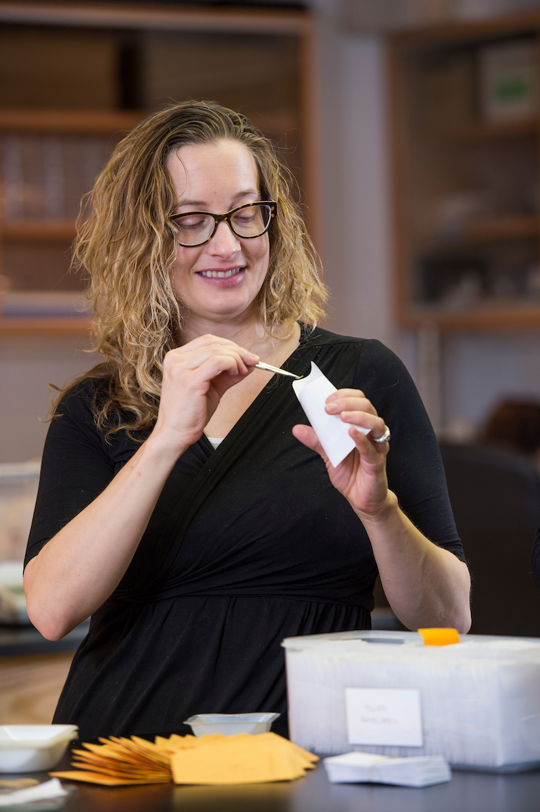
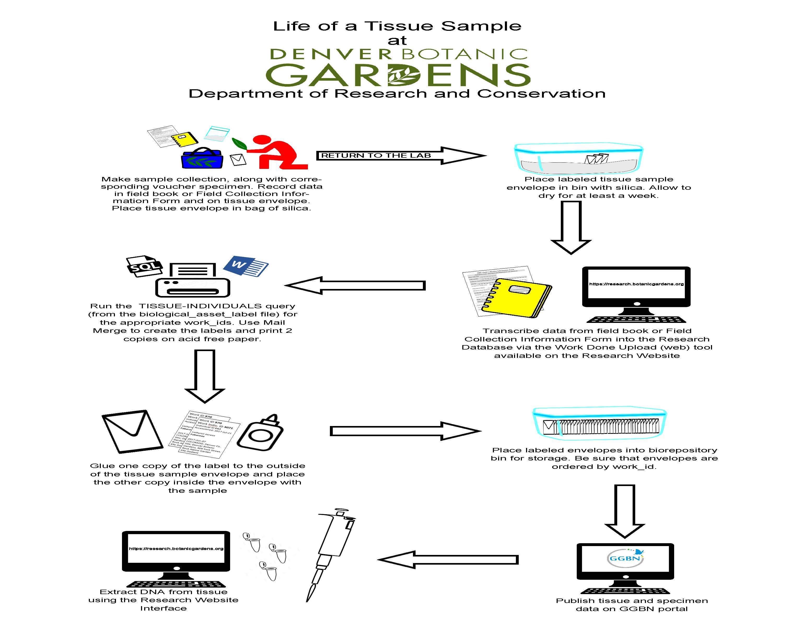

Tissue Samples
Denver Botanic Gardens collects and preserves tissue samples. Most often they are complimentary material for herbarium specimens.Tissue samples are also collected to study population genetics. Tissue data is stored in the Research Database, but is noted in SEINet. Tissue data is also published on GGBN and can be loaned or sent to scientists in outside institutions. Tissue samples are dried in silica and stored on site in the Denver Botanic Gardens Biorepository.
GGBN 